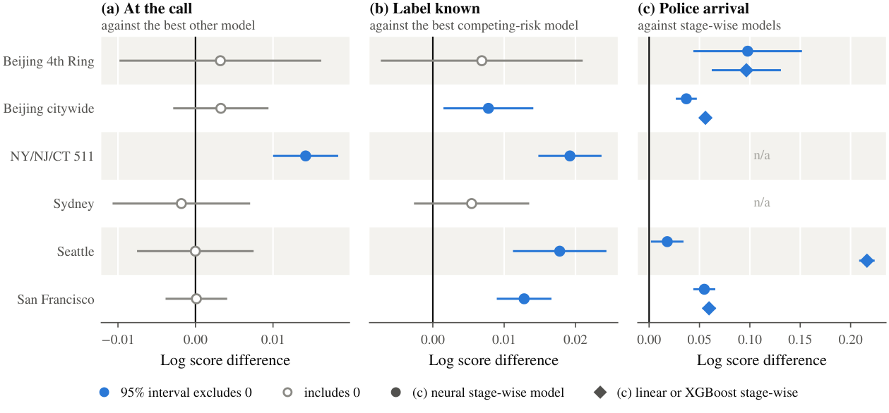
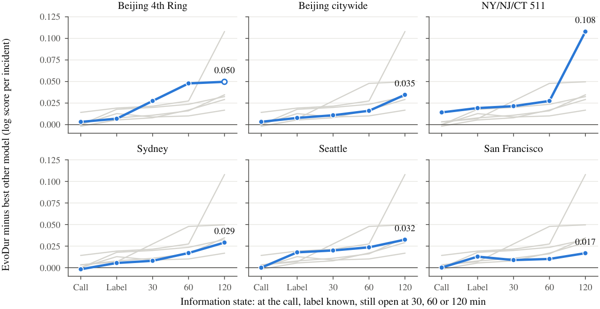
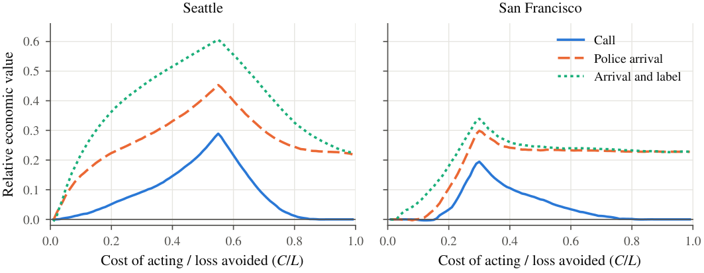

One model for every stage of the response:
Bayesian updating of traffic incident duration forecasts

EvoDur (evolving duration forecasts). The forecast for one incident is updated as the police arrive, the officer reports how the incident is handled (the label), and the incident stays open. Each update multiplies the forecast at the call by one factor per piece of information.
Abstract
Traffic management centers decide on diversions, message signs, tow trucks and police units while an incident is still open, so they need a duration forecast that is revised as information arrives. Most existing models are refitted for each stage, and the models for late stages learn from the few incidents that reach them. We propose EvoDur (evolving duration forecasts), one model for every stage. A neural network forecasts the duration distribution at the call. The police arrival time, the response label (how the incident is handled), and the elapsed time each enter through their own likelihood given the duration, and Bayes' rule combines whatever is known. On six datasets from three countries, EvoDur is as accurate as the best of ten baselines at the call. After police arrival it is more accurate than models refitted for that stage and than a single network with the later information as optional inputs, and the longer an incident stays open, the more it gains over models refitted on the incidents still open. With the arrival time and the label, its 80% prediction intervals have a 5–14% lower interval score than those of stage-wise linear and gradient-boosted models and keep their nominal coverage. Relative to the call, the arrival time and the label reduce the error of the predicted median by 11–37% on the four datasets that record arrivals, and the forecast of the incident class (minor, intermediate or major) improves at each stage. All results are reproducible with the released code.
Method
Let \(\boldsymbol{x}\) be what is known at the call (time, location, incident type and, where recorded, priority), \(T\) the duration and \(C\) the response label, such as the clearance method or the disposition of a police call. Competing-risk models, the usual joint model of duration and label, put the label first:
Their forecast at the call is then a mixture over labels that are not yet known. EvoDur factorizes the same joint distribution the other way round, with the duration first:
The label is now evidence about the duration, and every later piece of information \(e_j\) that has a likelihood given the duration enters the same way:
The forecast at the call \(f(t \mid \boldsymbol{x})\) is a neural mixture of log-logistic distributions. There are three evidence modules: a classifier of the label given the duration; a model of the police arrival time as a fraction of the duration, so the police always arrive before the incident ends; and the indicator that the incident is still open at time \(s\). Each is fitted once on all incidents, so any combination of information is handled without refitting, and an update takes 1–3 ms on one CPU core.
The label carries information because long incidents tend to end with a larger response:

Probability of each label class given the duration, from EvoDur's label module on held-out incidents. At each duration the bands sum to 1; the gray histogram under each panel shows the distribution of durations.
Results
We compare EvoDur with ten baselines, from linear accelerated failure time (AFT) and XGBoost-AFT models to DeepHit, Neural Fine-Gray and neural competing-risk mixtures, by the held-out log score with five-fold cross-validation. Competing-risk models use the label directly; stage-wise models are refitted for each stage on the incidents and information available at that stage.
Accuracy at the call and after the police arrive

Log score of EvoDur minus that of its strongest competitor (positive means EvoDur is better), with 95% confidence intervals over folds. (a) At the call, against the best other model. (b) With the label known, against the best competing-risk model. (c) After police arrival, against models fitted for that stage. n/a: the dataset does not record arrival times.
The margin grows as information accumulates

Log score of EvoDur minus that of the best other model in each information state. At 30, 60 and 120 min the label is known and the incident is still open. Each panel shows one dataset in blue and the other five in gray. On the 4th Ring data few test incidents are still open at 120 min, so that point (open circle) is imprecise.
Updating versus refitting
A model refitted for a late stage learns only from the incidents still open at that time, and these become few. EvoDur keeps the forecast at the call, learned from all incidents, and only updates it.
| Label known and | Beijing 4th Ring | Beijing citywide | NY/NJ/CT 511 | Sydney | Seattle | San Francisco |
|---|---|---|---|---|---|---|
| at the call | −11 (0/5) | −3 (1/5) | 0 (3/5) | −5 (0/5) | −2 (2/5) | +6 (5/5) |
| open at 10 min | +1 (2/5) | −2 (1/5) | +1 (3/5) | −2 (2/5) | −3 (2/5) | +4 (5/5) |
| open at 30 min | 0 (2/5) | +4 (4/5) | +5 (5/5) | +5 (4/5) | 0 (3/5) | +4 (5/5) |
| open at 60 min | +16 (3/5) | +18 (5/5) | +28 (5/5) | +4 (3/5) | +10 (5/5) | +7 (5/5) |
| open at 90 min | – | +25 (3/5) | +36 (5/5) | +5 (3/5) | +16 (5/5) | +8 (5/5) |
| open at 120 min | – | 0 (4/5) | +88 (5/5) | −4 (2/5) | +20 (5/5) | +9 (5/5) |
Log score of EvoDur minus that of a neural network refitted on the incidents still open (×10−3 per incident; positive means EvoDur is better) and the number of folds, out of five, in which EvoDur is better. Bold: better in all five folds. –: fewer than 100 test incidents per fold.
Forecasts in minutes
On the four datasets that record the police arrival, the arrival time and the label shorten the 80% prediction interval and the error of the predicted median, while the interval keeps covering about 80% of incidents.
| Dataset | Error of the median (min) | Width of 80% interval (min) | Coverage of 80% interval | |||
|---|---|---|---|---|---|---|
| Call | Arrival, label | Call | Arrival, label | Call | Arrival, label | |
| Beijing 4th Ring | 17.7 | 15.3 | 46 | 39 | 79% | 79% |
| Beijing citywide | 18.8 | 16.8 | 48 | 42 | 79% | 79% |
| Seattle | 78.3 | 49.6 | 232 | 141 | 81% | 80% |
| San Francisco | 74.0 | 57.9 | 218 | 181 | 81% | 79% |
Mean absolute error of EvoDur's predicted median, and the mean width and coverage of its 80% prediction interval, on held-out incidents.
Effects of call-time attributes and labels
Because each piece of information enters through its own module, its effect on the forecast can be read off directly. A severe NY/NJ/CT event (closure, overturn or fire) multiplies the predicted median by about 2.6, while a San Francisco call closed as canceled or without merit has its predicted median cut by more than half. For call-time attributes, EvoDur agrees in direction with a linear AFT model.

(a) Ratio of the average predicted median duration with and without a call-time attribute, for EvoDur (dots, with the range over folds) and the linear AFT model (open circles). (b) Ratio of the average predicted median after and before the label is known. These are associations learned from the records, not causal effects.
Value for decisions
For a decision that pays off only if an incident lasts more than 2 h, such as signing a long diversion, acting on EvoDur's probability of such an incident saves more at each stage of the response.

Relative economic value against the ratio of the cost of acting to the loss it avoids: 0 is no better than always or never acting, 1 is the value of knowing the duration in advance.
Data
| Dataset | Period | Incidents | Median (min) | Label | Arrival time | Access |
|---|---|---|---|---|---|---|
| Beijing 4th Ring | 2008 | 5,388 | 21.5 | Clearance method | Yes | On request |
| Beijing citywide | 2008 | 40,120 | 28.3 | Clearance method | Yes | On request |
| NY/NJ/CT 511 | 2010–2015 | 206,009 | 43.0 | Event type | No | data.ny.gov |
| Sydney | 2017–2022 | 38,607 | 33.3 | Attending agencies | No | Mendeley Data |
| Seattle | 2010–2026 | 253,758 | 126.7 | Clearance description | Yes | data.seattle.gov |
| San Francisco | 2015–2026 | 88,186 | 63.5 | Disposition | Yes | data.sf.gov |
The code downloads the four public datasets, checks them against the snapshot used in the paper and regenerates every table and figure. The Beijing data are available from the corresponding author on reasonable request.
BibTeX
@article{cao2026evodur,
title = {One model for every stage of the response: Bayesian updating of
traffic incident duration forecasts},
author = {Cao, Xiaoyang and Liu, Zhiyong and Li, Ruimin},
journal = {Preprint},
year = {2026}
}